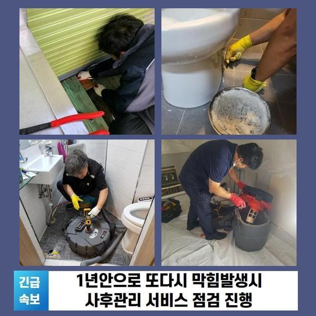
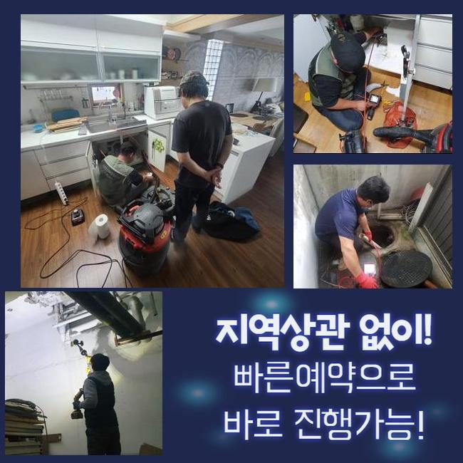
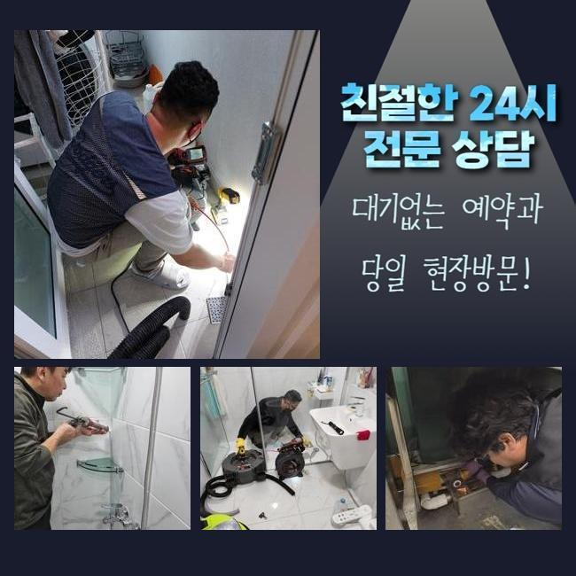
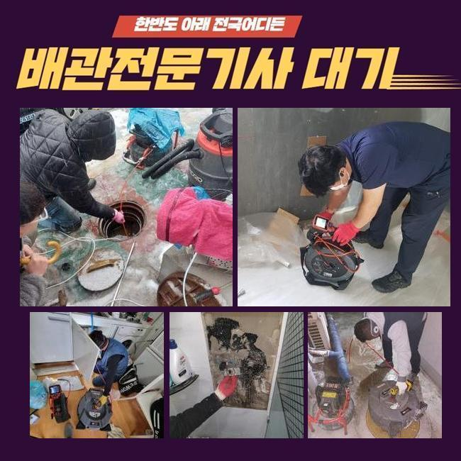
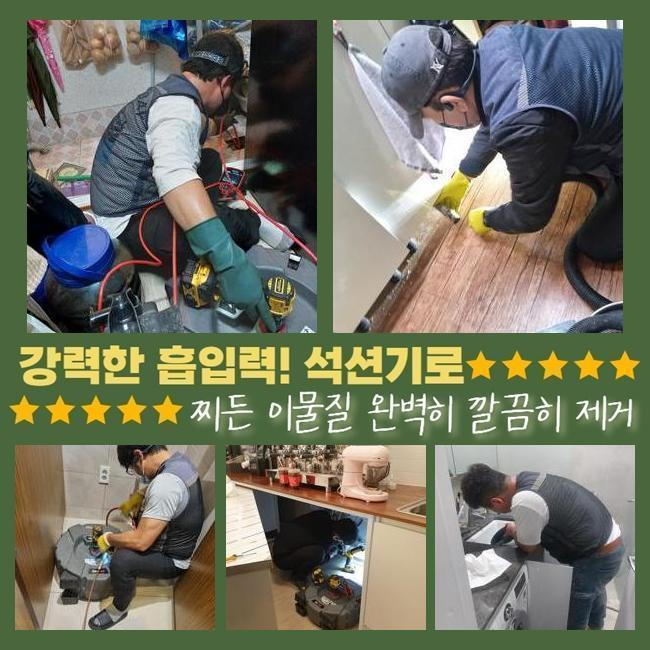
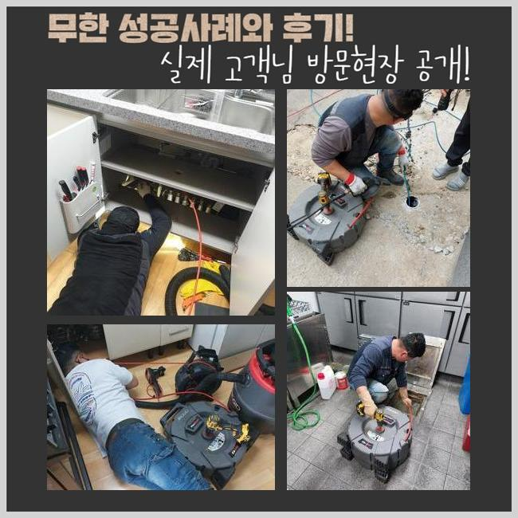

🏠 종로 관훈동오수관막힘 예지동 배수로뚫기 수리업체
용인시 처인구 배관막힘 전문 시공 후기

📋 작업 개요
- 위치: 용인시 처인구, 수원시 영통구, 화성시 동탄
- 서비스 유형: 배관막힘, 배관수리, 고압세척, 내시경점검
- 작업 일시:
- 업체명: 하수구수사대 (010-5615-2118)
🔍 문제 상황
종로 관훈동오수관막힘 예지동 배수로뚫기 수리업체
갑자기 막히는증상이 발현되는경우도 있습니다만 대다수의경우 징조를보인채 발생합니다
이를 처리하고자 자가조치를 시도하고는하는데 무리해서 조치하면 배관손상이나 역류같은문제로 발발될수있죠
하수구시스템이 무너지게되면 먼저보이는 증상을 설명드리자면 역류현상과 악취까지 물이정상으로 빠져나가지않는 문제들이있죠
이런문제는 개인공간외에도 다세대로 이루어진 공공장소도 자주 발생하고있으며 일상영위시 곤란함을 일으키는데요
막힘이일어나는 주요원인은 개별가정과 상가나 식당등등에서 생기게되는 각종이물들의 무분별함으로 배출하는것이죠
트랩이나 망같은 제품의경우 하수구와 관련된증세를 예방해보는데 도움될순있으나 이런조치들을 대부분의경우 실현하지않죠
얼마전에 저희한테 하수구가막혀 도움을원하셨던 한고객의경우 물이흐르지않는 문제와같이 배관에서 발현하는냄새와 역류문제까지 문의주셨어요

🔎 원인 분석
💡 전문가 진단: 정밀 진단 장비를 사용하여 슬러지의 고착 여부를 판명하고 타격/세척 작업을 실시했습니다.
작업장소에 방문하여 현장상태를 체크해보니 이물질들이 쌓이고쌓여 냄새문제와 역류현상들이 나타난것이 확인되었어요
막힌이유에대해 확실히 파악하려면 하수구cctv같은 장비를통해 내부파악이 필요했죠
배관카메라를 통하여 배관안을 들여다본결과 오염물과 쓰레기들이 상당한양으로 쌓여있는것을 알아낼수있었어요
퇴적된 잔해물질의 정확한성질을 파악해야하며 이를통하여 가장효율적인 제거방식을 결정할수있어 분석하는작업이 선행됐죠
하수관을막는 주요이유로는 가정안에서 발현되는 다양한쓰레기와 이물질인것을 알아낼수있었죠
이러한 이물질들을 세척해내고자 전문기기를 이용하여 제거하는과정을 진행해주었죠
석션도구는 배관속의 이물질을 흡입시켜주는 효과를 맡고있는데요
이를통해서 하수구안쪽에 남겨져있는 수많은 오염물을 빨아들일수있어요

🔧 작업 과정
그치만 하수구안속을 깔끔히하는건 한번에 청소만으로는 제거하기어렵고 여러번 스케일링을 진행하여 오염물질들을 철저하게 소거시켜야했죠
이물질이잔여될 가능성이있다보니 반복적인 세척과정으로 내부이물을 전부없애기위해 노력했어요
청소를끝낸후 카메라를투입해 하수관내부 상황을 점검해봤어요
들어차있던 잔해물질이 없어진것을 살펴볼수있었지만 여전히소량의 잔여물이발견되어 추가적으로 수리작업이 필요한 상황이었어요
잔여된이물을 확실히 제거시키기위한 몇차례더 이물제거를 진행해서 말끔했던 배관상황으로 복원하고자 성심성의껏 진행했답니다
배수관속에 쌓여있는 오염물을 효율적으로 제거해보고자 조금더 강력하게 이물질을 흡입했답니다
강하게 빨아들이니 좀전에 진행했던 작업보다더 원활히 제거되는걸 확인했어요
단단하게 굳어버린 오염물의경우 석션장비로만은 한계를보여 고압세척기계를 활용하여 강력하게 압력적용을 하는것이 적합하다고 판단할수있었죠
연속적으로 청소했더니 잔여된이물들이 나오지않는것을 파악한후에는 배관카메라로 하수구안에 남겨져있는 오염물이 전혀없는걸 최종해서 검사하는 단계들로 넘어가보았죠
내시경을 이용하여 세밀하게 검사해본결과 하수도내부에서 그이상 잔해물질이 없었던까닭에 성공의결실로 마칠수있었어요
마무리단계로는 하수도배관을 분해했던곳을 원래의모습으로 되돌리는 단계를 진행해야했죠
이번과정에서 배관안쪽부분에 손상이생기지 않게끔 주의해야해요


✅ 작업 완료
야기되는 막힘문제들은 징조가나타날때 처리하는것이 필수적이고 처리하기위하여 전문기기들을 필요시하는 복잡스러운 작업의경우 전문인이게 맡기는게 알맞은 처리방법이에요
하수구로인해서 곤란함을 겪고계신경우 편하신 시간대에 저희한테 문의주세요!
30분~60분안에 어떤지역이든 내방이가능하고 투명하게 작업과정을 공개하고있사오니 걱정하지마세요!
하수구와 관련하여 해소되지않으신게 있으신경우 문의하시면 친절히 상담돕겠습니다



⚠️ 하수구 배관 막힘 예방 및 관리 가이드
- ✅ 머리카락, 비닐, 물티슈 등 물에 분해되지 않는 이물질은 절대 흘려보내지 마세요.
- ✅ 기름기 많은 식기는 설거지 전 키친타올로 먼저 기름때를 닦아내세요.
- ✅ 주기적으로 배수구에 뜨거운 물을 가득 부어주어 유지방 고착을 방지하세요.
- ✅ 작업 후 1년 이내 재발 시 무상 A/S 보증 서비스를 제공합니다.
💡 핵심 정리
- 확실한 장비 작업(내시경 점검 및 샤프트 스케일링)으로 원인을 뿌리 뽑습니다.
- 작업 후 1년 이내에 동일한 부위 재발 시 100% 무상 A/S 서비스를 보장합니다.
- 서울 · 경기 · 인천 전 지역에 24시간 언제든 긴급 출동할 수 있도록 항시 대기 중입니다.
❓ 자주 묻는 질문 (FAQ)
🚨 용인시 처인구 배관막힘 문제로 고민이신가요?
정확한 원인 진단과 확실한 시공으로 재발 없는 해결을 약속드립니다.
24시간 긴급 출동 | 서울 · 경기 · 인천 전지역 | 1년 내 재발 시 무상 A/S